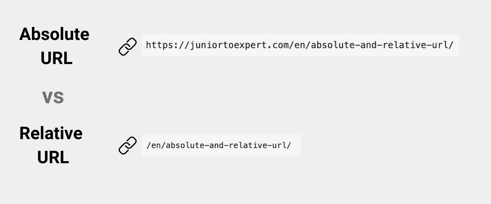

Tp 02.Ejercicio 1: Enlaces
1.1-¿qué es una URL?
Uniform Resource Locator (URL)Es una cadena de texto que especifica donde puede encontrarse cierto recurso. Se conoce como enlace.

1.2-¿qué es una url absoluta?
Una dirección URL absoluta contiene toda la información necesaria para localizar un recurso.
1.3-¿qué es una url relativa?
Las URL relativas son estructuras de URL que contienen la ruta de ubicación, omitiendo el nombre del sitio web
1.4-¿cuál es la diferencia entre una url relativa y una url absoluta?
Una dirección URL absoluta contiene toda la información necesaria para localizar un recurso. Una dirección URL relativa busca un recurso mediante una dirección URL absoluta como punto de partida.

1.5- Crear tres enlaces absolutos a tres recursos. Los recursos deben ser PDF, PNG, TXT
Pdf
PNG
TXT
1.6- ¿qué es un directorio? ¿qué relación hay con una carpeta?
Los directorios le permiten agrupar archivos y otros directorios para organizar el sistema de archivos en una jerarquía modular, que proporciona flexibilidad y profundidad a la estructura del sistema de archivos.
1.7- En la estructura de un proyecto web, ¿a qué se llama directorio raíz? ¿Con qué símbolo se representa?
El directorio raíz o root directory es el directorio principal que, en los sistemas operativos parecidos a Unix, contiene todos los demás directorios y archivos, lo cuales operan con lo que se conoce como un sistema jerárquico y se designan con una barra diagonal y/o inclinada (/)
1.8 Un archivo XLS que deseamos enlazar se encuentra alojado en el servidor de nuestra institución educativa, dentro de la carpeta de recursos compartidos llamada "documentos". Dentro de esta carpeta, hay otra subcarpeta llamada "excel", donde se encuentra específicamente el archivo que necesitamos, llamado "datos_estudiantes.xls". Sabiendo que el protocolo utilizado es https y nuestra institución es el CET Nº30. Armar la url absoluta para dicho archivo.
Campus cet30.
1.9- Una empresa cuyo dominio es xyzlt.com tiene su logo en archivo gif. El logo está identificado bajo el nombre logo. Se encuentra en un host llamado data. Todos los archivos multimedia están en un directorio llamado asset que organiza dentro según el tipo de archivo, para imágenes se utiliza img, para pdf se utiliza pdf y para audios se utiliza audios. Armar la url absoluta.
xyzlt.com
1.10- ¿Cuál es el propósito de la etiqueta anchor?
Para crear hipervínculos.
1.11- ¿Qué atributo se utiliza en la etiqueta anchor para especificar la URL a la que debe enlazar?
El atributo href de un enlace (abreviatura de “Hypertext REFerence”) indica la relación entre páginas a los motores de búsqueda.
1.12- ¿Qué sucede si el atributo "href" en la etiqueta anchor está vacío?
El atributo se refiere a un destino provisto por un enlace. La etiqueta a (anchor) está muerta sin el atributo "". A veces, en su flujo de trabajo, no desea un enlace en vivo o aún no sabrá el destino del enlace.
1.13- ¿Cuál es el uso del atributo "target" en la etiqueta anchor y cuáles son los posibles valores que puede tener?
El atributo target u objetivo describe cómo es que las usuarias o usuarios van a ser redirigidos con el hipervínculo.
1.14- Entonces ¿qué es un hipervínculo?
Un hipervínculo, es una conexión directa entre dos espacios virtuales en el mundo digital.
{kind=link}
{kind=link}